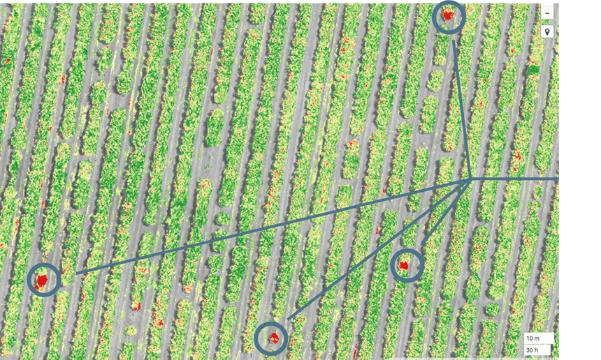

Implementamos tecnología de última generación para optimizar el momento exacto de la recogida. El uso de drones multiespectrales nos permite obtener una radiografía precisa de la salud de nuestros viñedos.
La viticultura de precisión ha dejado de ser una promesa de futuro para convertirse en una realidad cotidiana en Tierra Vieja. Este año, hemos dado un salto cualitativo al integrar una flota de drones equipados con sensores térmicos y cámaras multiespectrales que sobrevuelan nuestras 200 hectáreas de viñedo de forma autónoma.
Estos dispositivos capturen datos invisibles al ojo humano, como el índice de vigor de la planta (NDVI) y el estrés hídrico de cada parcela. Esta información es procesada en tiempo real por nuestros agrónomos para decidir, con una precisión de metros cuadrados, qué filas de cepas están listas para la vendimia y cuáles necesitan unos días más de sol.
"La tecnología no sustituye la mano del viticultor, la potencia. Ahora sabemos exactamente qué necesita cada cepa antes incluso de entrar en el campo." — Miguel Ángel Lorent, Director de Viticultura
Beneficios de la Vendimia Inteligente
La adopción de esta tecnología no solo mejora la calidad final del vino, sino que también optimiza nuestros recursos y reduce la huella ambiental:
Mapas de Vigor
Identificamos zonas con maduración desigual dentro de una misma parcela para realizar cosechas selectivas.
Eficiencia Hídrica
Detectamos fugas en el riego y zonas de estrés antes de que afecten a la calidad de la uva.
Menor Desperdicio
Al recolectar en el punto óptimo de azúcar y acidez, maximizamos el rendimiento de cada racimo.
Hacia una bodega totalmente conectada
Los datos recogidos por los drones se integran en nuestra plataforma de gestión "Tierra Cloud", donde se cruzan con datos meteorológicos históricos y análisis de laboratorio. Esto nos permite predecir con semanas de antelación el perfil organoléptico que tendrá la añada 2026, facilitando el trabajo de nuestros enólogos en la fase de fermentación.
Este compromiso con la innovación es lo que nos permite seguir ofreciendo vinos que mantienen la esencia de Cariñena, pero con una pureza y estabilidad técnica propias del siglo XXI.
"El futuro del vino está en el equilibrio perfecto entre el respeto a la tierra y la inteligencia del dato." — Carlos Benedí, Enólogo

Visita tecnológica
Si tienes curiosidad por ver estos dispositivos en acción, este verano incluiremos una demostración de vuelo y análisis de datos en nuestras visitas guiadas exclusivas. Es una oportunidad única para entender cómo se cuida el vino desde el aire.
Reserva tu plaza y consulta más novedades en nuestra sección de Actualidad y Eventos.